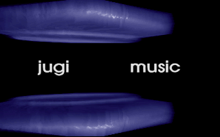
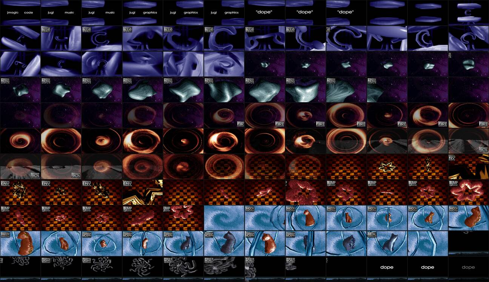

DOPE by Complex (The Gathering 1995)
A 1995 MS-DOS demo, taken apart and put back together in JavaScript. Part 1 is read out of the original DOPE.EXE; the music is the original 28-channel module.
Keys: space pause · ←/→ seek 5 s · j/l 10 s · Home restart. Pause and seek move the picture and the music together. Part 1 only: ?vm=1. Pin a frame: ?t=200. Serve the repository root over http (python3 -m http.server) and open /web/.
The original
DOPE.EXE (584,133 bytes) by Complex: code jmagic, graphics and music jugi, boxes pixelled by reward. It wants 550k of base memory, 600k of extended memory and a Gravis UltraSound with 512k: the music is a 28-channel ProTracker module mixed by the GUS hardware, not by the CPU. The readme admits the end scroll was never made.

Aspect ratio
The demo runs in VGA mode 13h: 320×200 pixels on a monitor that was 4:3. Pixels were therefore 1.2× taller than wide. The screenshots above are 320×200 and are shown at 4:3 here; the player does the same with CSS (aspect-ratio: 4/3) and nearest-neighbour scaling. The button toggles to the raw 16:10 shape if you want to see the difference.
The process
- Look at the file. A DOS
MZheader, then eight Rob Northen RNC (ProPack method 1) blocks found by scanning forRNC\x01. Block 0 (25,570 bytes unpacked) is a DPMI extender plus a GUS player: Oskari Tammelin's ProTracker for GUS, patched to upload samples into GUS RAM. Blocks 1..7 are the demo parts, loaded one at a time as overlays. - Unpack.
tools/rnc.py(and the identicalweb/js/rnc.js) decompress all eight blocks; the CRCs stored in each header match. - Disassemble. With
ndisasm. The first guess (32-bit protected mode) was wrong: the parts are 16-bit real-mode code that uses 32-bit registers, and it reprograms VGA mode 13h into a planar layout. - Get ground truth.
tools/refcapture.pyboots the realDOPE.EXEin DOSBox-X with GUS emulation and saves 320×200 frames. Anything I write has to match those pixels. - Build a measuring rig.
tools/vm/is a small x86 + VGA emulator that runs a snapshot of the part. It was used to measure, not to ship. - Transcode part 1. Once the picture layout (the card's planes read back four pixels per byte, CRTC start/offset counted in plane bytes) and the timer (69 interrupts/s, counter += 2) were right, part 1 reduced to a window into the unpacked picture plus two palette ramps.
web/js/part1.jsreproduces it with no emulator: 11 of 15 reference frames are byte-identical, 4 differ by 8 pixels each. - The music.
web/js/mod.jsis a 28-channel ProTracker replayer. Against libopenmpt the loudness envelope correlates at 0.994 over the first 20 s; over the whole tune the clocks drift by 0.3 s. Seeking skips ticks without mixing and is bit-identical to continuous playback (tests/test_transport.mjs).
Everything is in the repository: docs/ANALYSIS.md and docs/RUNTIME.md hold the notes and measurements.
What is real and what is not
| piece | state |
|---|---|
| unpacking, module parsing | exact (CRC-checked) |
| part 1 (first ~39 s) | transcoded from the original data, pixel-exact on 11/15 reference frames |
| music | the original module; own replayer, not bit-exact to the GUS |
| timeline of the whole demo | measured: one DOSBox-X frame every 3 s of the original, 8 parts, exits to DOS at ~7:13 (the player stops there, the song runs on to 8:35) |
| part 2, colours | exact: all 256 DAC entries read out of block 2, rewritten each timer tick through a 64 entry fade ramp (web/js/part2.js); every colour of the ten reference frames comes from it |
| part 2, credits screen | exact: the shade table (segment 0x1998) rebuilt from block 2 matches the running part's 24,576 bytes, the four credit bands sit at block 0x1201a and match memory byte for byte, and the compose loop run by the original's own instructions writes exactly what compose() predicts on all 64,000 pixels; with the one-row blit scroll (0x37e3) the frozen screen reproduces 90 of 199 rows byte exact, the rest one DAC step out on the fade ramp |
| part 2, 3D layer | not ported to this page. The engine that fills the span buffer (transform, projection, texture spans at 0x26c0) is described, and it runs: tools/part2run.mjs redoes the loader and boots the part from DOPE.EXE alone, which then builds 271 polygons and blits real frames. tools/part2frames.mjs drives it one frame per timer tick, 438 frames in ~15 s (the old 3.5×108 instructions per frame was a rig bug in 32 bit signed idiv). The best of those 438 frames matches build/ref_p2/ref_0000 in 35,180 of 64,000 pixels: the credit rows are almost exact, the two discs are not. So the page still shows the look-alike here |
| parts 3..end | look-alikes, not ports. Each is a procedural imitation timed to the capture (chrome discs and credits, ribbons "phong BLUR motion", "7800 PHONG polys", "FIRE clouds", "FRACTAL scape", "ENV mapping", "BUMP glow", "SHADOW volume / material MORPH / METAL shading", "LIGHT sources", "WORLD domination", end). They are recognisably the same sequence but not the same pixels. |

That is the honest gap: the 3D parts are 370-480 KB overlays each (a texture mapper, object data, 256 colour palettes). I have captures of them, disassembly notes, and for part 2 a rig that renders sequential frames, not a port to the page. web/js/look.js says so in its header. The browser checks in tests/test_browser.mjs (audio, pause, seeks at 0:30/2:00/6:00, the 7:15 loop and ?vm=1) pass 35/35 in headless Chrome.